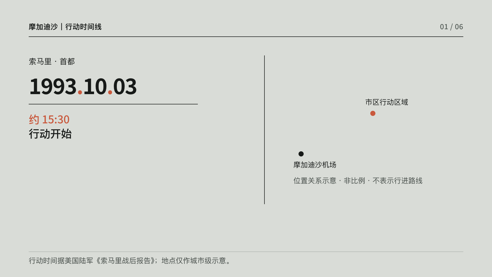
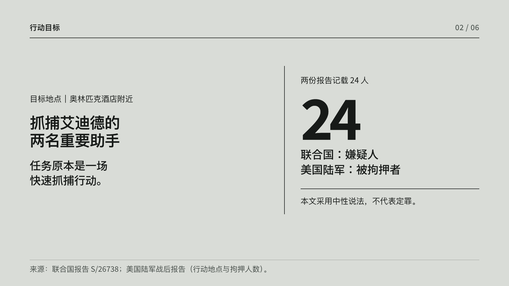
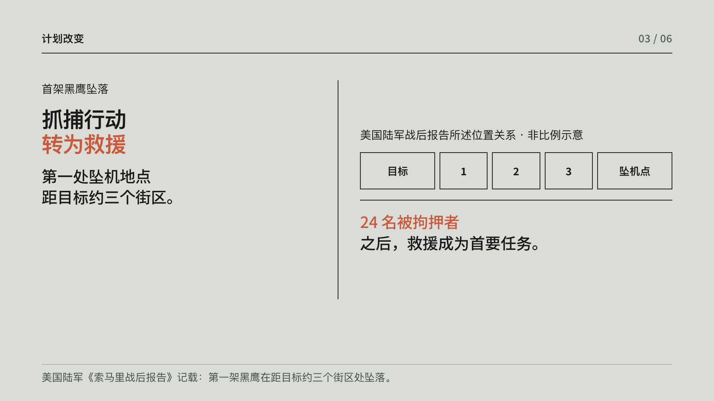
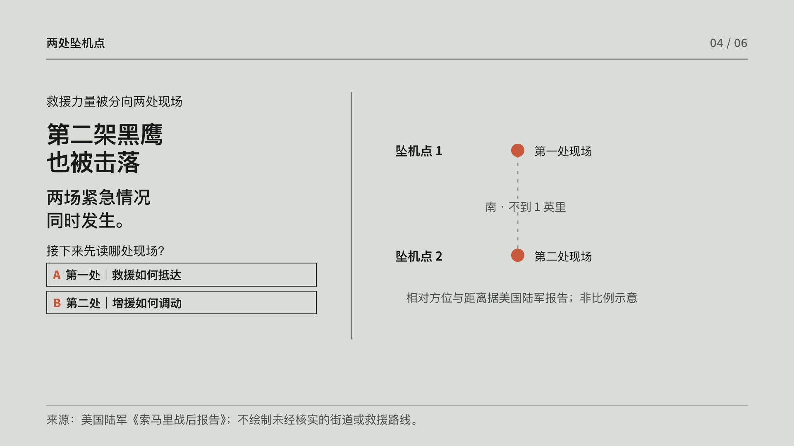
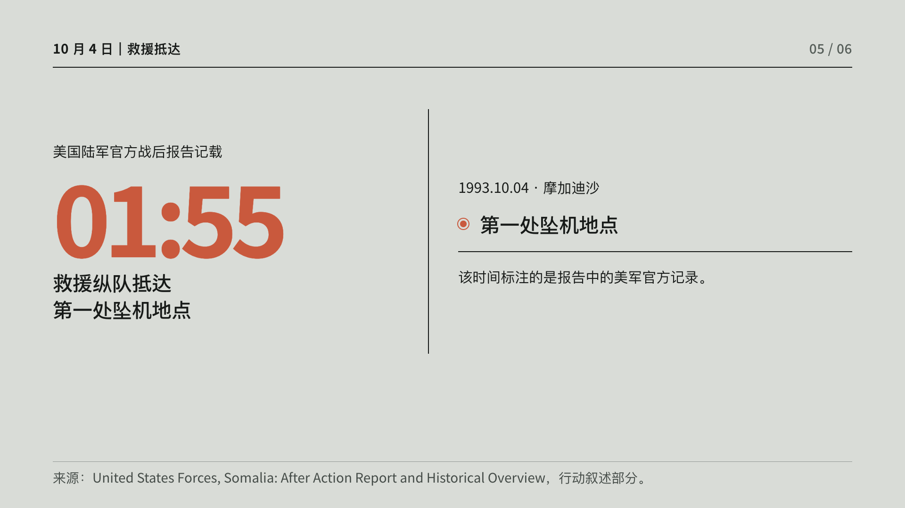
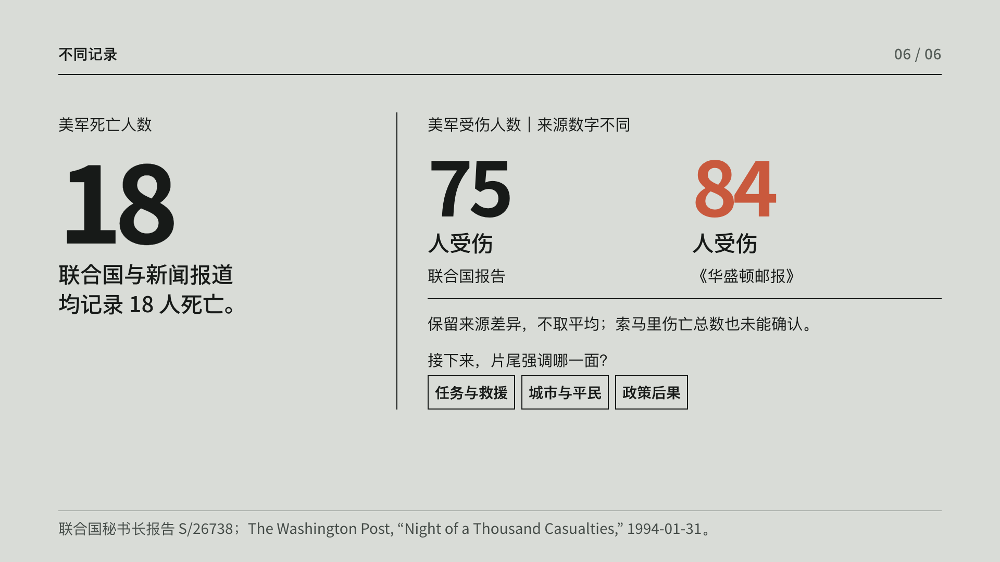

01｜行动开始
0–10 秒
城市地点示意 → 日期落下 → 约 15:30 行动开始。
一夜行动时间线：抓捕行动在两架黑鹰坠落后转为救援；片尾并列不同来源的伤亡记录。地图为依据美国陆军战后报告绘制的非比例示意，不表示精确街道或行动路线。

城市地点示意 → 日期落下 → 约 15:30 行动开始。

目标在奥林匹克酒店附近；联合国称 24 名嫌疑人，陆军报告称 24 名被拘押者。

第一处坠机点距目标约三个街区；图中以三个方块表达距离，不重画实际道路。

选择先读第一处现场救援记录，或第二处现场增援记录；两条支线在 01:55 汇合。

美国陆军官方战后报告记载：10 月 4 日 01:55，救援纵队抵达第一处坠机地点。

美军死亡人数均记为 18；伤者分别为 75 与 84。随后选择片尾强调任务与救援、城市与平民，或政策后果。